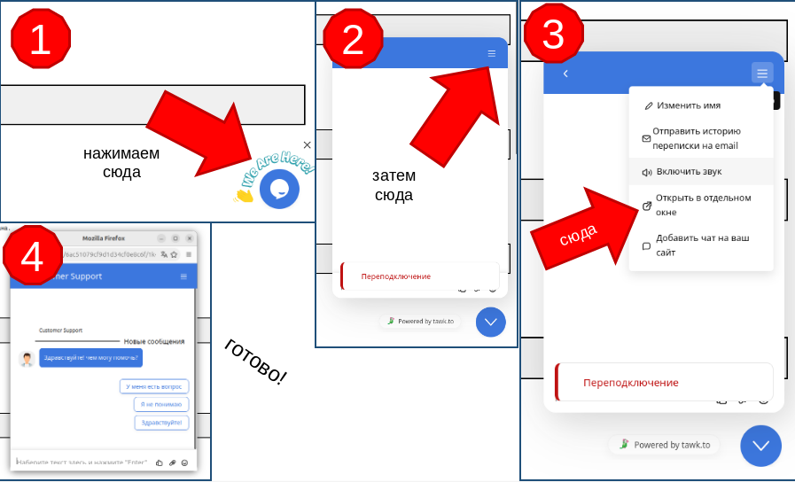

Служба поддержки
Если у тебя есть вопросы — напиши нам в чат. Он находится в правом нижнем углу экрана.
Windows
1. Нажми на иконку чата в правом нижнем углу.
2. Затем нажми на стрелку вверх.
3. Справа выбери «Открыть в отдельном окне».
4. Готово — пишешь сообщение и ждёшь ответа.

Ubuntu (Linux)
1. Нажми на иконку чата в правом нижнем углу.
2. Затем нажми на стрелку вверх.
3. Справа выбери «Открыть в отдельном окне».
4. Готово — пишешь сообщение и ждёшь ответа.

Android
1. Открой сайт в браузере Chrome.
2. Прокрути страницу вниз.
3. В правом нижнем углу нажми на круглую кнопку чата.

iPhone / iPad (iOS)
1. Открой сайт в Safari.
2. В правом нижнем углу появится иконка чата.
3. Нажми на неё — откроется окно поддержки.

Если чат не открывается — напиши нам на почту: poderhka_safeinternetworld@siteprofree.email